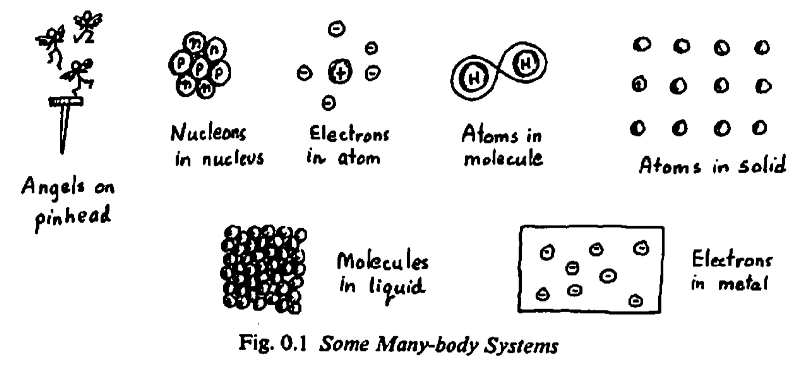

Panorama
How do magnets arise in nature? How do magnetic and electric fields induce currents in a material? How can we predict the behaviour of electrons in the materials that we interact with?
These are the questions that the field of solid state physics (or its more contemporary relative, condensed matter physics) aims to explain.
For many years now, electrons have proved themselves to be an important pathway for understanding the everyday objects we interact with. From magnets to electronic hardware, designing and engineering the devices that our technology relies upon requires a deep, atomistic understanding of the moving parts of a solid.
Nonetheless, an accurate description or prediction for one material is not enough to be considered explanatory. Instead, having an intuitive picture of the “why it happens” can shed light on “when will happen again?”. This is the role of the physics aspect of this field of study.

Applications
I am interested in bridging predictions with intuition. This amounts to using a tool called density-functional theory to get a quantitative description of a realistic material, along with a post-processing step (Wannierization).